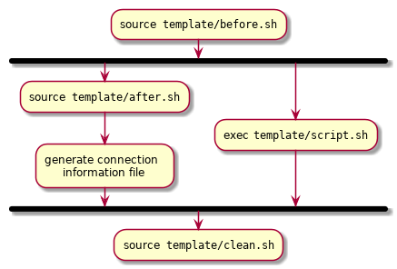

Render Template¶
The template/ directory contains the template used for constructing the
Interactive App’s batch job. It is located in the root of the application
directory.
Assuming we already have a sandbox Interactive App deployed under:
${HOME}/ondemand/dev/my_app
The template/ directory can be found at:
${HOME}/ondemand/dev/my_app/template/
When an Interactive App session is first “Launched” by the user, the
template/ directory is:
Copied to the user’s home directory under an appropriately namespaced data root directory:
${HOME}/ondemand/data/sys/dashboard/batch_connect/dev/my_app/output/<session_id>/where the
session_idis a unique id generated by the Dashboard App when a user first launches a session.All
*.erbfiles in this new directory are rendered using eRuby (Embedded Ruby) with access to the objects:sessionandcontext.All
*.erbfiles are renamed with theerbextension stripped from the file name.
ERB Objects¶
In your ERB template files you will have access to not only the Ruby standard
library but also to the two useful objects: session and context.
Session¶
The session object describes the current Interactive App session. A few of
the helpful methods it provides are given below:
-
id (String) the unique id generated by the Dashboard App when the session was created
- Example
Display session id
Current session running is <%= session.id %>
-
staged_root (Pathname) the directory where the session template is staged and initially run in
- Example
Point to an image asset file that is staged by your template
icon: <%= session.staged_root.join("assets", "icon.png") %>
-
cluster_id (String) the cluster id used to submit this session to
- Example
Determine if Owens cluster
<% if session.cluster_id == "owens" %> ./run_owens_script.sh <% end %>
Context¶
The context object is an object that holds all the attributes defined
by the User Form.
Warning
All attributes in the context object return a Ruby String. So
conversions are necessary if you intend on operating on an attribute.
For example, if you want to perform arithmetic on the bc_num_hours
attribute that a user filled out in the Interactive App form:
export SECONDS=<%= context.bc_num_hours.to_i * 3600 %>
Note, that we used #to_i on the string to convert it to an integer
before performing arithmetic.
Template Files¶
A running batch job for an interactive session will source and/or fork aptly
named scripts that it finds under the template/ directory. These scripts
can be used to build the environment, launch the web server process, and/or
clean up the workspace when the process exits.

Fig. 6 Activity diagram for basic Interactive App batch script.¶
Fig. 6 details the common workflow for a basic Interactive App’s batch script. The logic follows as:
- Source in the
template/before.shscript if it exists. - Fork off the
template/script.shinto the background (must block until session is done). - Source in the
template/after.shscript if it exists. - Generate the connection information file for the user.
- Wait for the
template/script.shprocess to complete. - Source in the
template/clean.shscript if it exists.
Before Hook¶
Optional
The batch script will source the file template/before.sh as early as
possible if it exists. This file must be a Bash script. It can be used for
but not limited to:
- populate the
portandpasswordenvironment variables needed for the web server and for connecting back to it - generate host-specific configuration files
- generate secure password files
Danger
If you are creating a VNC Interactive Application, then DO NOT set the
port and password environment variables. There is already internal
logic in place that handles this for you.
There exists some helpful Bash functions that can be used in this sourced script:
-
find_port [MIN_PORT] [MAX_PORT] Finds an available port within the specified range [MIN_PORT..MAX_PORT].
- Default
- [2000..65535]
- Example
Find a random port that is available within the default range
port=$(find_port)
-
create_passwd [SIZE] Generates random alphanumeric password of length SIZE.
- Default
- 32
- Example
Generate a random password 16 characters long
password=$(create_passwd 16)
An example before hook template/before.sh that defines a port and password
file that can later be used in the script that launches the web server may look
like:
# Find available port to run web server on
export port=$(find_port)
# Define a password and password file used for authentication
password="$(create_passwd 12)"
export PASSWORD_FILE="${PWD}/passwd"
# Create password file used by web server
(umask 077 && echo "${password}" > "${PASSWORD_FILE}")
Warning
If your web server is supplied with a password file or a configuration file that holds the password, be sure to set the permissions so only the user has read access to the file.
Main Script¶
Required
The batch script will fork the executable template/script.sh into the
background. This file MUST exist in your template directory with executable
permission. This is where you launch the blocking web server process.
Warning
The main script is forked into the background in the batch script and then waited on. The batch script will exit when this background process also exits. So be careful of web servers that are daemonized.
Note
If you are creating a VNC Interactive Application, then you DO NOT need to start the VNC server process. There is already internal logic in place that handles this for you.
You WILL need to launch the GUI application in the main script that you intend to load within the VNC server.
An example template/script.sh that launches a simple static HTTP web server
may look like:
#!/bin/bash -l
# Purge the module environment to avoid conflicts with user-specified
# initialization files
module purge
# Load the Python module
module load python
# Launch the simple HTTP web server
python -m SimpleHTTPServer "${port}"
Danger
The above example does not use authentication with a password as it is a simple static HTTP web server. But it is highly recommended that authentication be enabled for any web server you launch. Otherwise, nothing stops a malicious system user from SSH tunneling to your live web server and abusing the web server.
After Hook¶
Optional
The batch script will source the file template/after.sh right after forking
off the main script into the background but before the connection information
file is generated. This file must be a Bash script. It can be used for but
not limited to:
- populate the
portandpasswordenvironment variables needed for the for connecting back to the web server - parsing any output files generated by web server
Tip
In some cases you are unable to get the port of the launched web server until after the fact. This would be a good place to parse the web server log and grab the port to set it.
In most cases the template/after.sh will not be used.
Cleanup Hook¶
Optional
The batch script will source the file template/clean.sh after the
background process for the main script exits. This file must be a Bash
script. It can be used for but not limited to:
- cleaning up any temporary files that aren’t needed
- killing any misbehaving leftover processes
Warning
If the batch script hits the maximum requested wall time, then this will not
run. If this is an issue you are experiencing you may want to look into
setting the timeout option under the batch_connect configuration
feature in your submit.yml.erb.
In most cases the template/clean.sh will not be used.